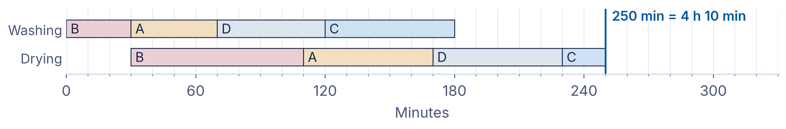
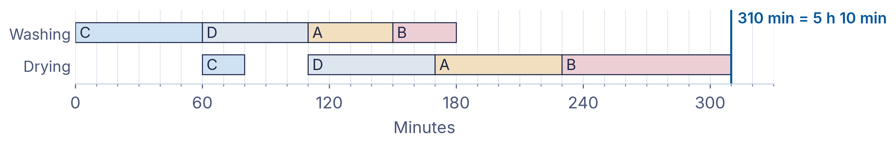
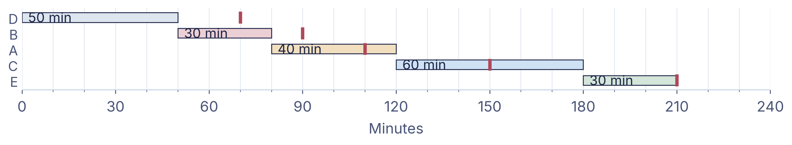
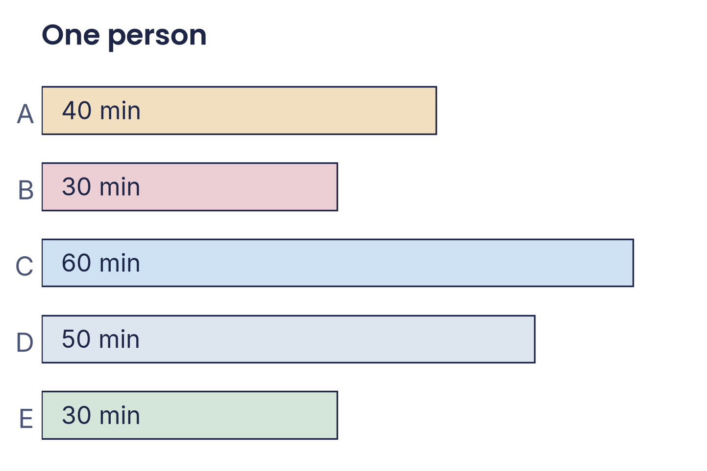

Lecture IV: Scheduling
Programming: Everyday Decision-Making Algorithms
Today in one sentence
There is no single best order for your tasks: first decide what you want to achieve, and the right rule follows.
Why it matters
Monday morning, ten tasks on your list: where do you start? Companies face the same question at scale: which order on the production line, which customer order first, which project gets the team this week.
Roadmap
- The basics: when order matters, and when it doesn’t
- Your goal decides the rule: deadlines, waiting time, value
- Real life: dependencies, interruptions and thrashing
The basics: when order matters, and when it doesn’t
Ten tasks, one day: where do you start?
Question: How do you decide?
- With the most urgent one
- With the quickest one
- With the most important one
Keep your answer in mind. We come back to it.
Notes
Answer: Most students say the most urgent, the quickest or the most important one. All three are rules, and each one serves a different goal: not being late, waiting less, delivering more value. Which rule is right depends on the goal, and that is today’s topic.
Four loads of laundry, one washer, one dryer
Every load is washed first, then dried.
Each machine handles one load at a time.
Notes
Our first example is as simple as it gets: four loads, two machines, and the only question is the order.
Goal: all laundry done as early as possible
Load Washing Drying
A 40min 60min
B 30min 80min
C 60min 20min
D 50min 60minGoal: Finish all four loads as early as possible
Question: In which order would you wash?
Notes
Answer: Start with the loads that wash quickly, so the dryer can start early, and end with the loads that dry quickly, so little is left once the washer is done. That is Johnson’s rule, and it gives the order B, A, D, C with a total of 250 minutes. Let students suggest orders first, then compare.
Johnson’s rule
Rule:1
- Find the shortest time in the whole table
- Is it a wash? Put that load as early as possible
- Is it a dry? Put that load as late as possible
- Cross out the load and repeat
In words: short washes go first, so the dryer can start early. Short dries go last, so little is left to do once the washer has finished.
Applying Johnson’s rule
Load Washing Drying Schedule
A 40min 60min
B 30min 80min
C 60min 20min
D 50min 60minQuestion: Which load do we place first, and where?
Notes
Answer: Load C, and it goes last. The shortest time in the table is C’s dry, 20 minutes. It is a dry, so C goes as late as possible. Point out that the rule fills the schedule from both ends.
Applying Johnson’s rule
Load Washing Drying Schedule
A 40min 60min
B 30min 80min
C 60min 20min 4
D 50min 60min- The shortest time is C’s dry, 20 minutes
- It is a dry, so C goes last
Question: Which load is next?
Notes
Answer: B. Without C, the shortest time left is B’s wash, 30 minutes. It is a wash, so B goes first.
Applying Johnson’s rule
Load Washing Drying Schedule
A 40min 60min
B 30min 80min 1
C 60min 20min 4
D 50min 60min- The shortest time is B’s wash, 30 minutes
- It is a wash, so B goes first
Question: Which load is next?
Notes
Answer: A. The shortest time left is A’s wash, 40 minutes. It is a wash, so A takes the next free place from the front, position 2.
Applying Johnson’s rule
Load Washing Drying Schedule
A 40min 60min 2
B 30min 80min 1
C 60min 20min 4
D 50min 60min- The shortest time is A’s wash, 40 minutes
- It is a wash, so A goes second
Now, we only have one load left!
Applying Johnson’s rule
Load Washing Drying Schedule
A 40min 60min 2
B 30min 80min 1
C 60min 20min 4
D 50min 60min 3Final sequence: B A D C
The best order takes 4 hours 10 minutes
Best order: B A D C

How to read this chart

- One row per machine
- One bar per load
- Time runs from left to right
- It is called a Gantt chart, after Henry Gantt, who drew such charts around 1910 for factory planning.
Question: How much worse can it get?
Notes
Answer: One hour worse. The reverse order C, D, A, B takes 310 minutes instead of 250. Any order that starts with a long wash or ends with a long dry is worse.
Frederick Taylor made the first systematic time studies, Gantt turned them into charts for factory planning. Gantt charts show who does what, and when. Johnson’s rule from 1954, published at the RAND Corporation, was the first scheduling rule with a proof, and modern scheduling theory grew from there.
A bad order takes one hour longer
A bad order: C D A B

Question: Why is this order worse?
The dryer waits a full hour for the first wash, and the longest dry comes at the very end.
Notes
Answer: The dryer idles for the first 60 minutes while C is washing, and B’s 80-minute dry starts only after the last wash, so everything ends at 310 minutes instead of 250. Both ends of the schedule are wasted: a long wash in front, a long dry at the back.
Johnson’s rule beyond laundry
- Any work in two steps, where the second step waits for the first
- You: when cooking, start with what is quick to prepare and long in the oven
- Companies: a report goes from the analyst to the reviewer. Start with the report that is quick to write and long to review
Order the work so that the second step never stands idle.
Scheduling is everywhere
Question: Where do companies schedule?
- Projects: which task first, who works on what
- Production: which order on the line
- Hospitals: patients, surgeries, staff
- Transport: routes, crews, maintenance
- Software: which program gets the processor
Notes
Answer: Almost everywhere: projects (which task first, who gets the resource), software (which program gets the processor), operations (which order on the production line), healthcare (patients, surgeries, staff), transportation (routes, crews, maintenance). The same rules we see today are used in all of them.
What do we know about a task?
- Duration: how long does it take?
- Deadline: when is it due?
- Value: how much is it worth?
- Dependency: what must be done before?
Which of these we look at depends on our goal.
One person instead of two machines

Question: What is different from before?
Notes
Answer: There is only one resource, so nothing runs in parallel and nothing waits for a second step. The total time is the sum of all durations, 180 minutes for A to D, whatever the order.
One person: does the order matter?
Question: Does the order change how long we need?
With one person and no deadlines, every order takes the same total time.
Question: So the order is irrelevant?
No. Order becomes crucial with deadlines, priorities and dependencies.
Reordering your to-do list does not make it shorter. Order only matters once you say what you want.
Notes
Answer: First question: no, the total is always 180 minutes. Second question: no, the total is the same, but who waits how long, what is late and what is worth the most all depend on the order. Under simple minimization of total processing time, order doesn’t matter: the total is the sum of all durations, whatever the order. As soon as we care about deadlines, waiting time, priorities or dependencies, the order matters a lot.
Your goal decides the rule: deadlines, waiting time, value
Roadmap
- The basics: when order matters, and when it doesn’t
- Your goal decides the rule: deadlines, waiting time, value
- Real life: dependencies, interruptions and thrashing
What do you want?
- Not be late
- Wait as little as possible
- Deliver the most value
Each goal has its own rule.
Companies know this conflict: sales wants every order on time, production wants as much output as possible.
Goal 1: don’t be too late
Tasks with individual deadlines:
Task Duration Deadline
A 40min 110min
B 30min 90min
C 60min 150min
D 50min 70min
E 30min 210minAll times count from now: task D is due in 70 minutes.
Goal: Keep the worst delay as small as possible
Question: In which order would you work?
Notes
Answer: Sort the tasks by deadline and work through them in that order: D, B, A, C, E. This is the earliest due date rule, and for this goal it is the best possible order.
Earliest deadline first
Rule: Sort the tasks by deadline, earliest first.
This rule is called Earliest Due Date, or EDD.
Task Duration Deadline
A 40min 110min
B 30min 90min
C 60min 150min
D 50min 70min
E 30min 210minTask Duration Deadline
D 50min 70min
B 30min 90min
A 40min 110min
C 60min 150min
E 30min 210minLet’s visualize this!
The plan: earliest deadline first

Red marks: deadlines.
Question: What is the worst delay here?
30 minutes, for task C. Task A is 10 minutes late.
In the order A to E, task D would be 110 minutes late.
Notes
Answer: 30 minutes, for task C, which finishes at 180 minutes with a deadline of 150. Task A finishes at 120 with a deadline of 110, so it is 10 minutes late. D, B and E are on time. No other order gets the worst delay below 30 minutes. Without the rule, in the order A to E, D would finish at 180 minutes with a deadline of 70, so 110 minutes late.
Earliest due date in real life
- You: work on assignments in the order they are due
- Companies: produce customer orders in the order of the promised delivery date
- Watch out: the rule ignores how long a task takes and how important it is
Goal 2: as little waiting as possible

No deadlines this time. For each task, someone is waiting.
Goal: Keep the total waiting time as small as possible
Question: Which task first?
Notes
Answer: Shortest task first. Every task that is done early stops waiting, and everything behind it waits only a little. This is the shortest processing time rule, and it gives the smallest total waiting time.
Shortest task first
Rule: Always do the shortest remaining task next. If two are equally short, pick either.
This rule is called Shortest Processing Time, or SPT.
Task Duration Schedule
A 40min
B 30min
C 60min
D 50min
E 30minQuestion: In which order do we work?
Notes
Answer: B, E, A, D, C, or E, B, A, D, C, because B and E both take 30 minutes. Both orders give the same total waiting time.
Shortest task first
Rule: Always do the shortest remaining task next. If two are equally short, pick either.
This rule is called Shortest Processing Time, or SPT.
Task Duration Schedule
A 40min 3
B 30min 1
C 60min 5
D 50min 4
E 30min 2Final sequence: B E A D C or E B A D C
The plan: shortest task first

Question: Where can we see the waiting time?
Notes
Answer: In the empty space before each bar. A task waits from the start until its bar begins, so B waits 0 minutes, E 30, A 60, D 100 and C 150 minutes. The later a bar starts, the longer that task has waited.
Waiting time adds up to 340 minutes
Total waiting time: 340 minutes

Grey: time a task waits before it starts.
The other way round, longest task first: 500 minutes.
Shortest task first in real life
- You: if it takes less than two minutes, do it now
- Companies: a help desk that answers quick requests first makes the average customer wait less
- Why it works: a short task makes everyone behind it wait only a little
- Watch out: the big task keeps getting pushed back
Goal 3: deliver the most value
- Change: Tasks now have different values, e.g. revenue for a consultant
Task Duration Revenue
A 20min €240
B 30min €200
C 60min €120
D 50min €70
E 30min €130
F 40min €120
G 20min €100
H 70min €110
I 50min €90Question: Which task first?
Notes
Answer: Neither the highest revenue nor the shortest task alone, but revenue per minute, highest first. A earns 12 euros per minute, D only 1.40. The order is A, B, G, E, F, C, I, H, D. Students often propose “highest revenue first”. That would move G, 20 minutes for 100 euros, from third to seventh place.
Highest value per minute first
Rule: Highest revenue per minute first
Task Duration Revenue Revenue/Min Schedule
A 20min €240 12.0
B 30min €200 6.7
C 60min €120 2.0
D 50min €70 1.4
E 30min €130 4.3
F 40min €120 3.0
G 20min €100 5.0
H 70min €110 1.6
I 50min €90 1.8Revenue per minute = revenue divided by duration. Task A: 240 euros / 20 minutes = 12 euros per minute.
Question: In which order do we work?
Notes
Answer: A (12.0), B (6.7), G (5.0), E (4.3), F (3.0), C (2.0), I (1.8), H (1.6), D (1.4). Read the Revenue/Min column from the highest value down. This rule is called Weighted Shortest Processing Time, or WSPT.
Highest value per minute first
Rule: Highest revenue per minute first
Task Duration Revenue Revenue/Min Schedule
A 20min €240 12.0 1
B 30min €200 6.7 2
C 60min €120 2.0
D 50min €70 1.4
E 30min €130 4.3
F 40min €120 3.0
G 20min €100 5.0 3
H 70min €110 1.6
I 50min €90 1.8Highest value per minute first
Rule: Highest revenue per minute first
Task Duration Revenue Revenue/Min Schedule
A 20min €240 12.0 1
B 30min €200 6.7 2
C 60min €120 2.0 6
D 50min €70 1.4 9
E 30min €130 4.3 4
F 40min €120 3.0 5
G 20min €100 5.0 3
H 70min €110 1.6 8
I 50min €90 1.8 7Value per minute in real life
- You: before an exam, study first what brings the most points per hour
- Companies: when machine time is scarce, produce the order that earns the most per machine hour
You may know this from cost accounting: contribution margin per unit of the bottleneck.
No money involved? Rate the importance from 1 to 10 instead.
Real life: dependencies, interruptions and thrashing
Roadmap
- The basics: when order matters, and when it doesn’t
- Your goal decides the rule: deadlines, waiting time, value
- Real life: dependencies, interruptions and thrashing
A spacecraft that kept restarting
- In July 1997, NASA’s Pathfinder landed on Mars
- Then its computer started to restart again and again
- The cause: an important task was waiting for an unimportant one2
Question: How can that happen?
Notes
Answer: The important task needed something that a low-priority task was holding. Medium-priority tasks kept the low-priority one from running, so the important task could not continue, and a safety timer restarted the computer. This is called priority inversion, and the next slide shows it with numbers. NASA fixed it from Earth by switching on priority inheritance.
Priority inversion: an important task waits for an unimportant one
Setup (priority 1 = highest):
Task Duration Priority
A 20min 3
B 30min 1
C 30min 2
D 30min 2
E 30min 2
- B is the most important task, but it needs A first
- A has the lowest priority, so C, D and E go first
- B waits 110 minutes for its turn
Notes
Strictly by priority, C, D and E run first (90 minutes), then A (20 minutes), and only then B can start, at minute 110. The challenge: high-priority tasks depend on low-priority tasks, and the priority order alone ignores that. Priority inversion can lead to significant delays.
How do we prevent this?
Question: What should happen with task A?
Rule: A task takes over the priority of the task that waits for it
Task Duration Priority
A 20min 1
B 30min 1
C 30min 2
D 30min 2
E 30min 2B now starts after 20 minutes instead of 110
This is called priority inheritance. It is how NASA fixed Pathfinder, from Earth.
Notes
Answer: A should be treated as important as B, because B waits for it. A takes over priority 1, runs first, and B starts after 20 minutes instead of 110. C, D and E follow, nothing changes for them except that they come later.
Priority inheritance in real life
- You: shopping has the priority of the dinner it is for
- Companies: a 5 euro spare part that stops a machine has the priority of the machine
A task is as important as what waits for it.
With dependencies, there is often no quick recipe
- For deadlines, waiting time and value, sorting is enough
- Add dependencies, and for many goals nobody knows a fast way to find the best plan
- In practice: good rules of thumb, or software that searches for a good plan
A good plan now beats a perfect plan too late.
Notes
In computer science terms these problems are NP-hard (NP stands for nondeterministic polynomial time): no known algorithm finds the best plan in reasonable time once the task list grows, and this is true for most scheduling problems. Waiting time with dependencies is one example. The exception with deadlines: Lawler’s algorithm (1968) finds the best order for the worst delay with dependencies by filling the schedule from the back, always placing the task without successors that has the latest deadline last. It is no longer on the slides. Heuristics are rules that give good, but not provably optimal schedules.
Interruptions: new tasks arrive while you work
- In reality we cannot predict the future
- New tasks arrive while we work
- We look at it with our first goal: don’t be too late
Notes
Quick reminder: an earliest due date is a specific point in time by which a task must be completed. Under this goal, we want to keep the worst delay as small as possible. If we have a deadline, we might need to meet it even when new tasks come in.
A morning with seven tasks
It is 8:00. These tasks arrive during the morning:
Task Arrives Duration Deadline
Email A 8:00 20min 9:00
Presentation 8:00 60min 10:50
Investor call 8:30 10min 9:00
Email B 8:40 30min 10:20
Liquidity report 9:00 40min 11:00
Email C 9:00 20min 11:20
Email D 9:20 40min 10:00Question: How would you start, if the goal is to avoid being late?
Notes
Answer: With Email A. At 8:00 only Email A and the presentation are there, and Email A has the earlier deadline, 9:00. We cannot plan the whole morning in advance, because we do not know yet what arrives later.
In real time: switch only for an earlier deadline
Rule:
- Always work on the task with the earliest deadline
- A new task with an earlier deadline interrupts the current one
- Otherwise, stick to the current task
This works for any goal: switch only if the new task beats the current one.
Notes
Equal deadline: if a new task has the same deadline as the current task, you can choose either. But because of the cost of context switching, you should stick with the current task.
The morning, planned in real time

Grey line: arrival, red mark: deadline.
Question: What is the worst delay with this plan?
20 minutes, for the liquidity report and Email C.
No plan does better here: there is simply more work than time.
Notes
Answer: 20 minutes. The liquidity report finishes at 11:20 with a deadline of 11:00, and Email C finishes at 11:40 with a deadline of 11:20. Everything else is on time, Email D exactly at 10:00. The presentation is interrupted twice, so it is done in three pieces, and still finishes at 10:40, before its deadline.
Every switch costs
- Every time you switch tasks, you clear your desk for three books and set it up again
- The switch itself produces nothing
- Switch often enough, and switching is all you do
Notes
Back to the desk from Lecture III: the three books on the desk are what we have in mind for the current task. A switch means putting them back and fetching the books for the next task. The book calls this a context switch, and its cost is the time spent on the switch itself.
Thrashing: switching so much that nothing gets done
- You switch tasks all the time
- Nothing gets finished
- Stress goes up, quality goes down
Question: Have you ever experienced this?
Notes
Answer: Open question, most say yes. Typical examples: exam week with several group chats open, or a workday that is only answering messages. Thrashing is the state in which the overhead of organizing and switching exceeds the productive work: maximum activity, minimum output.
Bundle your interruptions
- You: check email and messages at set times, not as they arrive
- Companies: one weekly approval round instead of requests at any time
- How fast must you respond? It is rarely “immediately”
- Too much on the list? Say no or hand over
Notes
Collecting interruptions and handling them in one go is called interrupt coalescing in computing. Long-term rules: a threshold for rejecting or delegating tasks, simplified organization systems, minimum work period rules, reduced reactivity requirements. Today’s tactics: time blocking, focus periods, task batching, priority freezes.
Which rule when?
| Situation | Rule |
|---|---|
| Work in two steps | Johnson: quick first step early, quick second step late |
| Deadlines count | Earliest due date first |
| People are waiting | Shortest task first |
| Tasks differ in value | Highest value per minute first |
| One task blocks another | The blocker gets the priority of what waits for it |
| New tasks keep arriving | Switch only for a better task, bundle the rest |
Urgent, quick or important? It depends on your goal.
What we covered
The basics: when order matters, and when it doesn’t
Sometimes the order of tasks changes the result, sometimes it doesn’t. Knowing which saves time.
Your goal decides the rule: deadlines, waiting time, value
Each goal has its own simple rule: earliest deadline first to avoid being late, shortest task first to cut waiting, highest value per minute first to maximize what you deliver.
Real life: dependencies, interruptions and thrashing
Dependencies make planning harder, and constant switching eats up your time. Protect blocks of focused work.
Why it matters
Monday morning, ten tasks on your list: where do you start? Companies face the same question at scale: which order on the production line, which customer order first, which project gets the team this week.
After the break: dictionaries and DataFrames
- Programming session in our new notebooks
- Today’s rules in code: dictionaries and DataFrames
- Different scheduling algorithms applied to problems
Notes
That’s it for scheduling! Let’s have a short break and then continue with our fourth Python programming session.
Literature
Interesting literature to start
- Christian, B., & Griffiths, T. (2016). Algorithms to live by: the computer science of human decisions. First international edition. New York, Henry Holt and Company.3
Books on Programming
- Downey, A. B. (2024). Think Python: How to think like a computer scientist (Third edition). O’Reilly. Free online
- Elter, S. (2021). Schrödinger programmiert Python: Das etwas andere Fachbuch (1. Auflage). Rheinwerk Verlag.
Think Python is free online and a great start. Schrödinger programmiert Python is a playful alternative in German.
More Literature
For more interesting literature, take a look at the literature list of this course.
Footnotes
Johnson, S. M. (1954). Optimal two- and three-stage production schedules with setup times included. Naval Research Logistics Quarterly, 1(1). Johnson proved that this rule gives the best possible order.↩︎
Christian & Griffiths (2016), ch. 5.↩︎
The main inspiration for this lecture. We have read it and discussed it in depth, always wanting to translate it into a course.↩︎